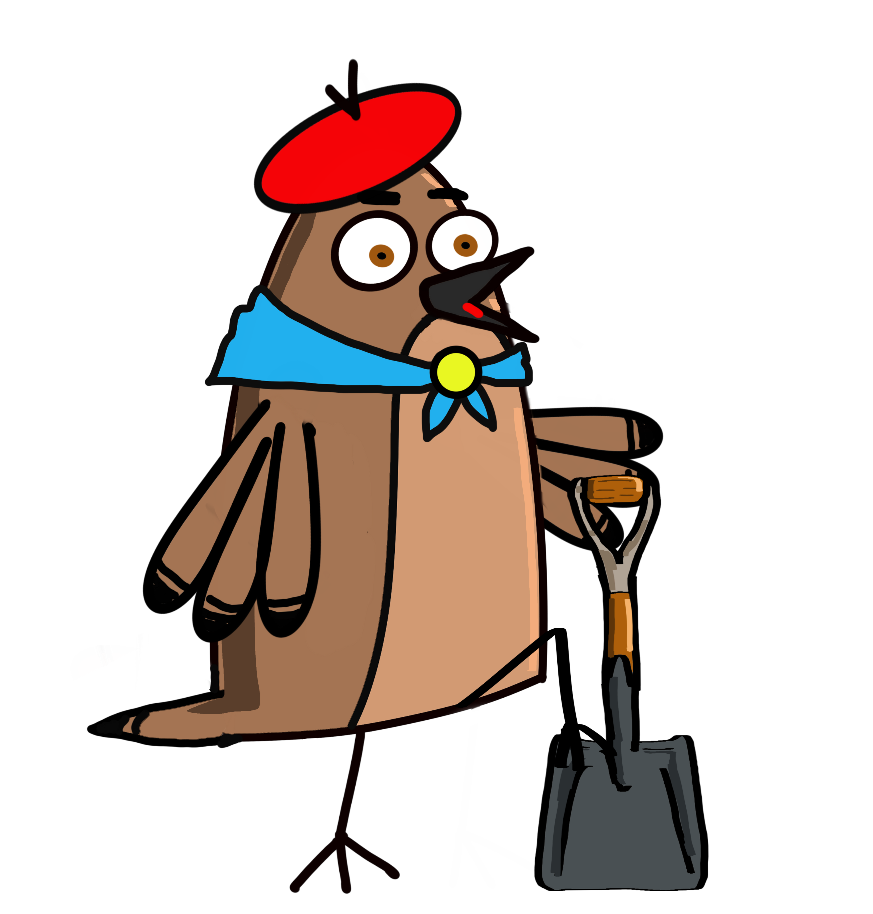

Roberto Hornero — Construyendo Patria
Poné acá el logo o banner del sponsor. Reemplazá esta sección en admin.html (buscá sponsor-banner) por una imagen, o pedime que te lo arme cuando tengas el logo.
Datos reales de uso — útiles para mejorar el juego o mostrarle a un sponsor el alcance y el engagement.
Cambiá el estado de cada provincia y guardá. Los cambios se reflejan en el juego al instante
(el jugador los ve la próxima vez que entra a "Elegí una Provincia").
Para el fondo de una provincia habilitada, subí la imagen a assets/escenarios/ en GitHub
y escribí acá el nombre exacto del archivo (ej: mendoza-aconcagua.png).
Votos actuales por provincia. Podés resetear el conteo de una provincia.
Últimos puntajes guardados (para verificar que Firebase esté guardando bien).